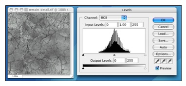
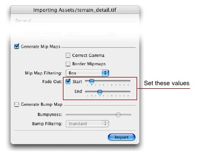
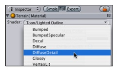
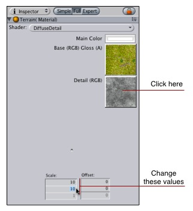

A detail texture is small, fine pattern which is faded in as you approach a surface, for example wood grain, imperfections in stone, or earthly details on a terrain.
Detail textures must tile in all directions. Color values from 0-127 makes the object it's applied to darker, 128 doesn't change anything, and lighter colors makes the object lighter. It's very important that the image is centered around 128 - otherwise the object it's applied to will get lighter or darker as you approach.
- Draw or find a grayscale image of the detail texture.

- Save the image next to your main texture.
- In Unity, select the image and choose Asset->Import Settings... from the main menu.
- The Texture importer pops up; Under mip maps, enable Fades Out and set the sliders to something like this:

The top slider determines how small the texture should before before beginning to fade out, and the bottom determines how far away it is completely gone
- In the material inspector on the right, select 'DiffuseDetail' from the Shader drop-down:

- Drag your texture from the project window to the 'Detail' texture slot.
- Click the texture in the material inspector, and set the scale values to a high value below

|


 Previous
Previous